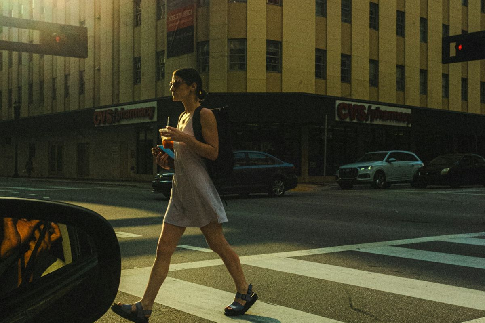
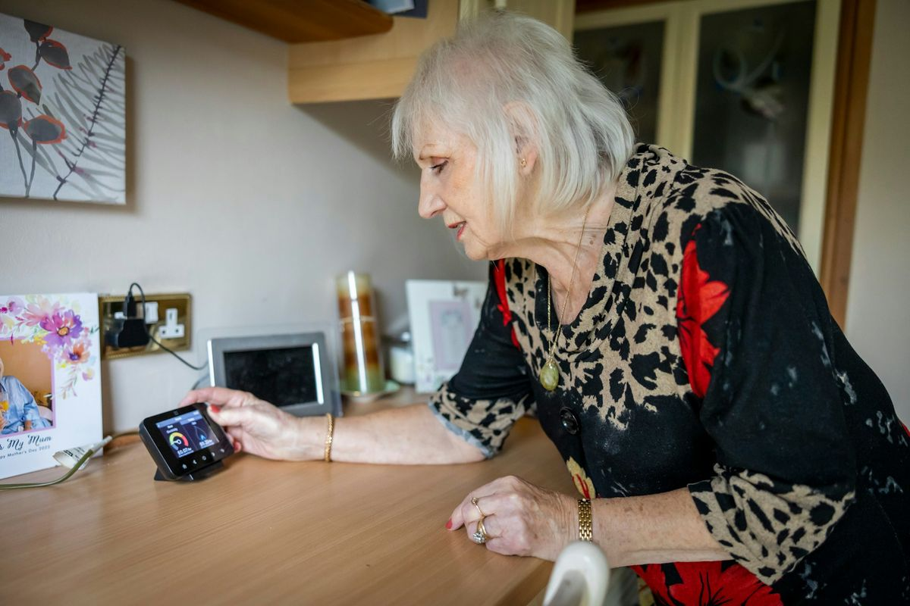

Before private information
becomes leverage.
Private conversations, finances and plans can become leverage over you. Toza assesses and hardens your phone, computer and accounts with you, in person.
In person · With you present · You control your credentials


Where this usually begins.
- Separation or divorceWhat still connects your digital lives.
- Business or founder disputeWhere personal and business access still meet.
- Inheritance conflictFamily arrangements that outlived the trust.
- Someone knows somethingPrivate information has surfaced. Start with what can be checked.
Or before anything happens. You don't need a known incident to begin.